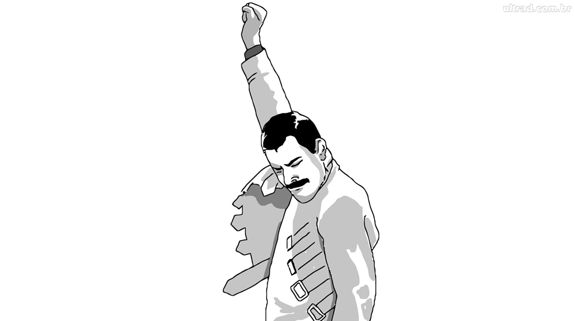

Objek wisata Sumatera Utara
by Random
- Wahyu Raja Butar-Butar(10 111 0354)
- Rahmatsyah Panggabean(10 111 1520)
- M.Hadi Ardiansyah(10 111 2070)
- Franseda Abudiman Dalimunthe(10 111 2495)
Sumatera Utara
Provinsi Sumatera Utara terletak pada 1° - 4° Lintang Utara dan 98° - 100° Bujur Timur, Luas daratan Provinsi Sumatera Utara 72.981,23 km².
Batas Wilayah
| Utara | Provinsi Aceh dan Selat Malaka |
| Selatan | Provinsi Riau, Provinsi Sumatera Barat, dan Samudera Indonesia |
| Barat | Provinsi Aceh dan Samudera Indonesia |
| Timur | Selat Malaka |
Batas wilayah Cont...
Di Sumatera Utara saat ini terdapat dua taman nasional, yakni Taman Nasional Gunung Leuser dan Taman Nasional Batang Gadis. Menurut Keputusan Menteri Kehutanan, Nomor 44 Tahun 2005, luas hutan di Sumatera Utara saat ini 3.742.120 hektare (ha). Yang terdiri dari Kawasan Suaka Alam/Kawasan Pelestarian Alam seluas 477.070 ha, Hutan Lindung 1.297.330 ha, Hutan Produksi Terbatas 879.270 ha, Hutan Produksi Tetap 1.035.690 ha dan Hutan Produksi yang dapat dikonversi seluas 52.760 ha.
Batas wilayah Cont...
Namun angka ini sifatnya secara de jure saja. Sebab secara de facto, hutan yang ada tidak seluas itu lagi. Terjadi banyak kerusakan akibat perambahan dan pembalakan liar. Sejauh ini, sudah 206.000 ha lebih hutan di Sumut telah mengalami perubahan fungsi. Telah berubah menjadi lahan perkebunan, transmigrasi. Dari luas tersebut, sebanyak 163.000 ha untuk areal perkebunan dan 42.900 ha untuk areal transmigrasi.
Daftar kabupaten/kota di Sumatera Utara
- Kabupaten Asahan
- Kabupaten Batubara
- Kabupaten Dairi
- Kabupaten Deli Serdang
- Kabupaten Humbang Hasundutan
- Kabupaten Karo
- Kabupaten Labuhanbatu
- Kabupaten Labuhanbatu Selatan
- Kabupaten Labuhanbatu Utara
- Kabupaten Langkat
- Kabupaten Mandailing Natal
- Kabupaten Nias
- Kabupaten Nias Barat
- Kabupaten Nias Selatan
- Kabupaten Nias Utara
- Kabupaten Padang Lawas
- Kabupaten Padang Lawas Utara
- Kabupaten Pakpak Bharat
- Kabupaten Samosir
- Kabupaten Serdang Bedagai
- Kabupaten Simalungun
- Kabupaten Tapanuli Selatan
- Kabupaten Tapanuli Tengah
- Kabupaten Tapanuli Utara
- Kabupaten Toba Samosir
- Kota Binjai
- Kota Gunungsitoli
- Kota Medan
- Kota Padangsidempuan
- Kota Pematangsiantar
- Kota Sibolga
- Kota Tanjungbalai
- Kota Tebing Tinggi
Berastagi
Berastagi merupakan objek wisata di dataran tinggi Karo. Berastagi berjarak sekitar 66 kilometer dari Kota Medan. Berastagi diapit oleh 2 gunung berapi aktif yaitu Gunung Sibayak dan Gunung Sinabung. Aktivitas ekonomi di Berastagi terpusat pada pasar sayur dan buah-buahan, dan pada pariwisata. Etnis yang dominan di daerah ini adalah Batak Karo.
Berastagi Cont...
Ada banyak tempat yang bisa anda kunjungi di Berastagi , Berikut lima tempat yang tidak boleh anda lewatkan saat berkunjung di Berastagi dan sekitarnya :
- Desa Lingga
- Bukit Gundaling
- Pasar Buah Berastagi
- Pemandian Air Panas Sidebuk-debuk
- Taman Alam Lumbini
Desa Lingga
Desa ini terletak 15 Km. dari Berastagi, tepatnya di Kecamatan Simpang Empat. Berisi rumah - rumah bersejarah yang telah berusia lebih dari 250 Tahun. Juga terdapat museum lingga yang berisi peninggalan-peninggalan kerajaan Karo. Kota Berastagi didominasi oleh suku Karo dan memiliki kerajaan yang unik. Dari desa inilah kabarnya terbentuk wilayah Karo.
Bukit Gundaling
Bukit gundaling juga menjadi peristirahatan para pelancong, bukit hijau yang berhiaskan pinus ini terlihat indah dan menawan. Dari sini kita bisa berkeliling dengan kuda sendiri atau bersama Keluarga, Diatas bukit Kita bisa melihat panorama kota Berastagi dari ketinggian, disini juga bisa kita jelas Gunung Sinabung dan Sibayak.
Bukit Gundaling Cont...

Di kaki bukit, terdapat banyak sekali bangunan-bangunan bersejarah peninggalan belanda yang ada disekitar bukit Gundaling. Kita bisa menikmati sunrise dari atas bukit. Hampir disepanjangan jalan, terdapat banyak tempat yang menjual souvenir-souvenir, menjual oleh-oleh dan cinderamata khas berastagi.
Pasar Buah Berastagi
Pasar buah Berastagi merupakan pasar buah paling sibuk di Sumatera Utara, setiap hari ada saja pelancong dari berbagai daerah singgah disini, macam-macam buah segar bisa dtemukan di pasar buah ini. Disini juga terdapat banyak sayur-sayuran Segar yang terhampar dipasar buah Berastagi dan letak pasar ini tak jauh dari Pusat Kota.
Danau Toba
Danau Toba merupakan salah satu danau terbesar di dunia dan juga sebagai Objek Wisata Danau terpopuler di Indonesia. Di tengah Danau Toba ini terdapat Pulau Samosir yang berada pada ketinggian 1.000 mdpl. Di danau tersebut pernah terjadi letusan yang begitu dahsyat dan memuntahkan bebatuan serta abu vulkanik hinggah sejauh 2000 km. Hal itu menyebabkan langit menjadi gelap hingga 2 minggu. Letusan tersebut akhirnya membentuk kawah gunung berapi yang begitu besar dan kemudian terisi air. Tekanan magma akhirnya membentuk pulau samosir.
Danau Toba Cont...
Objek Wisata Danau Toba dikelilingi oleh perbukitan. Suasana di sekitar terasa nyaman dan berudara sejuk. Anda dapat menikmati keindahanannya dengan berenang ataupun menyewa perahu motor sembari mengitari sekitar danau. Pulau Samosir juga memiliki danau diatas danau, yaitu Danau Sidihoni dan Danau Aek Natonang. Kedua danau diatas danau ini juga termasuk Objek Wisata Alam Indonesia yang wajib dikunjungi oleh pelancong, khususnya wisatawan domestik. Sangat sayang jika wisatawan manca justru lebih tahu dulu dengan sajian keindahan Objek Wisata Danau Toba di Sumatera Utara ini.
Danau Toba Cont...
Objek Wisata Danau Toba berada pada beberapa kabupaten di Sumatera Utara, antara lain:
- Simalungun
- Samosir
- Tapanuli Utara
- Humbang Hasundutan
- Karo
- Dairi
Danau Toba Cont...
Untuk mencapai Objek Wisata Danau Toba di Sumatera Utara ini, Anda dapat melalui rute kota Medan-Parapat ataupun melalui rute Medan-Berastagi yang berjarak lebih kurang 176 km dengan waktu tempuh kurang lebih 4 jam.
Sipiso-piso
Sipiso-piso
Air Terjun Sipiso Piso berada di sekitar tepi Danau Toba bagian utara dengan ketinggian lebih kurang 800 meter dari permukaan laut (dpl) dan dikelilingi oleh bukit yang hijau karena ditumbuhi hutan pinus. Ketinggian air terjun ini berkisar 120 meter sehingga dinobatkan sebagai air terjun tertinggi di Indonesia.
Nama Sipiso-piso berasal dari piso yang artinya pisau. Derasnya air-air yang berjatuhan dari bukit berketinggian di atas seratus meter ini diumpamakan layaknya berbilah-bilah pisau yang tajam. Selain itu, jurang yang curam jika dilihat dari puncak bukit membuat orang setempat menyebutnya piso dari Tanah Karo.
Lokasi
Sipiso-piso terletak di Desa Tongging, Kecamatan Merek, Kabupaten Karo, Propinsi Sumatra Utara. Kecamatan ini berada sekitar 24 km dari Kota Kabanjahe, ibukota Kabupaten Karo. Sedangkan jarak air terjun ini dari Kota Brastagi sejauh 35 km atau hanya memerlukan sekitar 45 menit dari Kota Medan.
Aksesibilitas
Untuk menuju air terjun ini dari Brastagi, arahkan perjalanan ke Parapat. Tak jauh setelah melewati Kota Kabanjahe, perhatikan jalan dengan teliti dan temukan tanda untuk menuju air terjun ini. Setelah berbelok ke kiri, ikuti jalan ini hingga menemukan sebuah danau besar yaitu Danau Toba. Di danau ini pengunjung bisa singgah sebelum meniti jajaran anak tangga yang melintasi lereng perbukitan di tepi Danau Toba. Ini yang merupakan satu-satunya jalan aman bagi wisatawan.
Jika menggunakan kendaraan umum dapat menggunakan bus dari terminal pusat kota Medan dengan trayek Kabanjahe. Waktu yang dibutuhkan sekitar 2 jam. Setelah sampai di Kabanjahe dilanjutkan 24 km ke arah utara jalur menuju Danau Toba hingga sampai di desa Tongging. Waktu yang dibutuhkan sekitar 30 menit berkendara.
Bukit Lawang
Bukit Lawang adalah sebuah desa kecil yang terletak di selatan Taman Nasional Gunung Leuseur. Terletak sekitar 90 kilometer barat laut Medan, ibu kota Sumatera Utara. Bukit Lawang adalah pintu gerbang ke dalam hutan Sumatera yang legendaris yang memiliki medan licin dan lereng curam serta berlumpur.
Bukit Lawang Cont...
Bukit Lawang adalah salah satu tempat terbaik di dunia untuk menemukan primata langka dan hampir punah. Melihat makhluk anggun berayun-ayun melalui ranting-ranting pohon. Hutan ini adalah salah satu komunitas terbesar orangutan, lebih dari 5000 orangutan tinggal di sini.
Pusat rehabilitasi orangutan adalah tempat bagi orangutan yatim piatu yang dilatih hidup di alam bebas. Pusat ini telah beroperasi sejak tahun 1973 dan hingga kini telah menarik pengunjung dari seluruh dunia untuk melihat sekilas makhluk menakjubkan.
Bukit Lawang Cont...
Ketika Anda masuk ke dalam hutan Sumatera, Anda bisa berkeliling dengan berjalan kaki. Perjalanan melalui hutan liar dan berlumpur, mencoba dan melihat sekilas satwa liar. Taman ini adalah rumah bagi hewan Sumatera dan hewan di dunia yang paling eksotis yaitu gajah, harimau, beruang madu, macan tutul dan orangutan yang terkenal. Disini kita bisa mendaki bukit untuk melihat pemandangan yang luar biasa dan berarung jeram di sungai bahorok yang sangat deras.
Syntax Highlighting
Powered by Lea Verou's Prism
bespoke.from('article', {
keys: true,
touch: true,
hash: true,
state: true,
bullets: 'li, .bullet'
});
Named Route
Powered by bespoke-hash
Look up! This route has been named with a 'data-bespoke-hash' attribute.
Emphatic Slide!
Powered by bespoke-state
Akhirnya Siap Juga
thanks
Our Github Page : http://coderkid.github.io/tkppl-bespoke-project
Our Trello : https://trello.com/b/aPiUVO1k/tkppl-bespoke-project